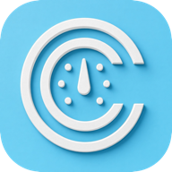
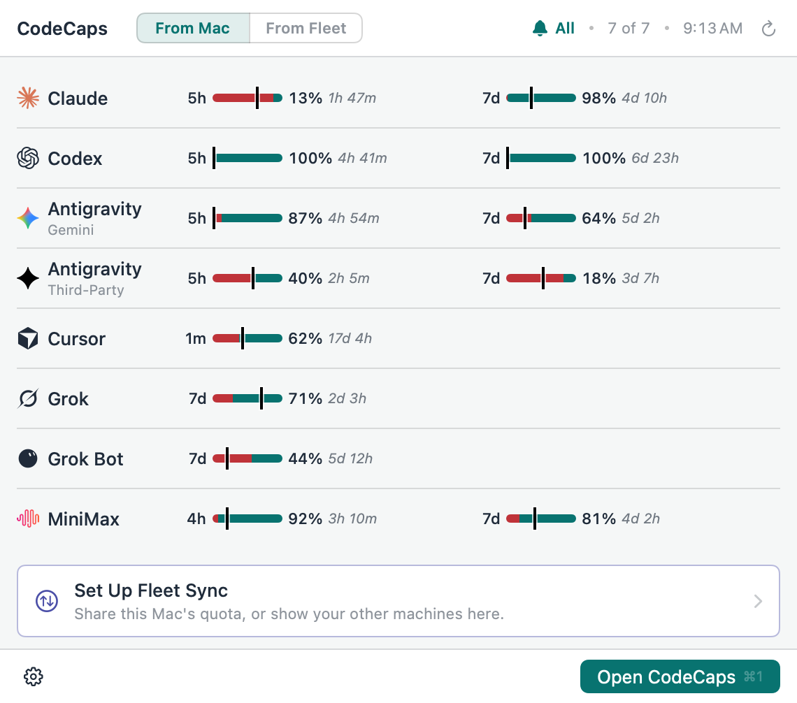
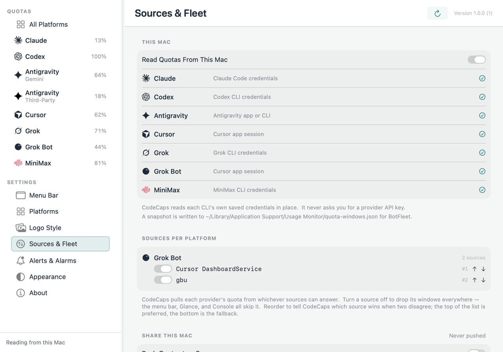

Provider windows
Claude, Codex, Antigravity, Cursor, Grok CLI, Grok Bot, and MiniMax have source-specific quota or usage readings. A percentage is a quota measure, not a subscription bill.

AI plan quotas, where you can see them.
See supported quota and reset windows from the Mac menu bar. CodeCaps reuses sign-ins from supported apps; you do not enter provider API keys into it. A source that cannot provide a reading is shown as unavailable.
macOS 14 or later · Apple silicon and Intel · Free and open source

Claude, Codex, Antigravity, Cursor, Grok CLI, Grok Bot, and MiniMax have source-specific quota or usage readings. A percentage is a quota measure, not a subscription bill.
Read each available window with its own reset time. Choose the menu bar window you want to keep in view.
Connect a collector you run to push this Mac's readings or pull those from other configured Macs. Both connections start off, and endpoint tokens are stored in the macOS Keychain.
Choose local readers and configure fleet connections in the app. Sharing readings requires an endpoint you supply.
